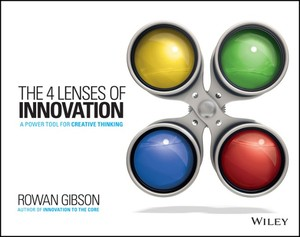

DAS GEHIRN
Innovationsstrategie, Prozesse und Governance
Wählen Sie Chancen, die einen nachhaltigen Wettbewerbsvorteil schaffen können. Verbinden Sie Aufgabenstellung, Erkenntnisse und Ideen mit Entscheidungen, Ressourcen und Entwicklung.
ALPINNO · KI-GESTÜTZTE INNOVATION EXCELLENCE
Verbinden Sie Innovationsstrategie, KI und Daten sowie agile Arbeitsweisen, um vielversprechende Chancen in differenzierten Mehrwert zu verwandeln.
Ein von ALPINNO geleitetes Angebot, umgesetzt in Zusammenarbeit mit Rowan Gibson.
Beginnen Sie mit einer zweitägigen Masterclass und einem Workshop. Testen Sie den Ansatz an einer realen Aufgabenstellung. Bauen Sie danach die Fähigkeiten in Ihrem Unternehmen auf.
KOMPLEMENTÄRE EXPERTISE.
EIN VERNETZTER ANSATZ.

KI-gestützte Innovation Excellence
Strategie. Erkenntnisse. Lernen. Handeln.
DIE HERAUSFORDERUNG
Eine Erkenntnis schafft erst dann Wert, wenn die Organisation sie weiterentwickeln, Entscheidungen treffen und handeln kann. Bessere Technologie hilft, ebenso wie klare Prioritäten, geteiltes Wissen und Raum für Experimente.
Wir verbinden diese Voraussetzungen zu einem Innovationssystem, in dem sich Verbesserungen gegenseitig unterstützen.
DAS INNOVATIONSSYSTEM
Eine Richtung, die Wert schafft. Fähigkeiten, die Möglichkeiten erschliessen. Eine Kultur, die Lernen in Handeln überführt.
DAS GEHIRN
Wählen Sie Chancen, die einen nachhaltigen Wettbewerbsvorteil schaffen können. Verbinden Sie Aufgabenstellung, Erkenntnisse und Ideen mit Entscheidungen, Ressourcen und Entwicklung.
DIE MUSKELN
Relevante Informationen finden und verknüpfen, mehr Möglichkeiten erkunden sowie Bewertung und Dokumentation unterstützen. Urteilskraft und Entscheidungsverantwortung bleiben beim Menschen.
DIE HÄNDE
Schaffen Sie Sicherheit, um Annahmen zu hinterfragen, Wissen über Bereichsgrenzen hinweg zu teilen und Zeit für Kreativität zu finden. Nutzen Sie Kundenfeedback und kurze Experimente, um zu lernen und sich anzupassen.
Eine gemeinsame Richtung macht KI nützlich. Geteiltes Wissen ermöglicht Verbindungen. Experimente bringen Ideen voran.
STRATEGIE → VALIDIERUNG → SKALIERUNG
Jede Phase unterstützt die nächste Entscheidung. Beginnen Sie mit einer gemeinsamen Richtung, testen Sie den Ansatz an einer realen Aufgabenstellung und bauen Sie dann interne Fähigkeiten auf. Vereinbaren Sie für die Skalierung den Umfang: von Tools und Prozessen bis zu umfassenderen organisatorischen Veränderungen.
01 STRATEGIE · DER ZWEITÄGIGE WORKSHOP
Eine unternehmensspezifische Masterclass und ein Workshop, die Lernen mit der Arbeit an Ihren eigenen strategischen Chancen verbinden.
Erkunden Sie den angestrebten Zustand von Innovationsstrategie und Governance, KI und Daten sowie agiler Kultur. Verbinden Sie anschliessend die drei Transformationspfade und nehmen Sie eine orientierende Selbsteinschätzung vor.
| 09:00–10:30 | Auftakt mit der Geschäftsleitung: Ambition und Kontext |
|---|---|
| 10:30–12:00 | Innovation: Strategie, Prozesse und Governance |
| 12:00–13:00 | KI und Daten: Erkenntnisse, Fähigkeiten und Urteilskraft |
| 13:00–14:00 | Mittagspause |
| 14:00–15:00 | Agilität: Sicherheit, Zusammenarbeit und Experimente |
| 15:00–17:00 | Die Transformationspfade verbinden |
| 17:00–18:00 | Fortschritt, Erkenntnisse und Lücken selbst einschätzen |
Prüfen Sie strategische Kennzahlen, Ambition, aktuelle Strategie und Grenzen. Erkunden Sie Aufgabenstellungen auf Strategie-, Portfolio- und Produktebene, vergleichen Sie Wirkung, Kosten und Risiken und priorisieren Sie gemeinsam mit der Führung.
| 09:00–10:15 | KPI-Ausgangswerte und Ziele |
|---|---|
| 10:15–11:30 | Strategie und Innovationsgrenzen |
| 11:30–13:00 | Aufgabenstellungen erkunden und sammeln |
| 13:00–14:00 | Mittagspause |
| 14:00–15:30 | Aufgabenentwürfe formulieren und hinterfragen |
| 15:30–16:30 | Vorläufige Bewertung von Wirkung, Kosten und Risiken |
| 16:30–18:00 | Abschluss mit der Geschäftsleitung: priorisieren und nächste Schritte vereinbaren |
Goldene Zeilen kennzeichnen die Teilnahme der Geschäftsleitung. Jeder Tag dauert von 09:00 bis 18:00 Uhr, einschliesslich einer Stunde Mittagspause. Kurze Pausen werden innerhalb der Sitzungen eingeplant.
Ein gemeinsamer Ansatz, ein orientierendes Transformationsprofil, 1–3 priorisierte Entwürfe für Innovationsaufgaben, sowie Kandidaten für die Pilotplanung. Der fokussierte Pilot wird anschliessend vereinbart für eine Aufgabenstellung.
Einen Workshop für Ihr Unternehmen besprechen02 VALIDIERUNG · EIN FOKUSSIERTER PILOT
Wenden Sie den KI-unterstützten, datenbasierten Innovationsprozess auf eine vereinbarte Aufgabenstellung an. Erkunden Sie anhand relevanter Erkenntnisse Lösungsfelder, gewinnen Sie Erfindungsimpulse, entwickeln Sie Ideen und bewerten Sie die stärksten Konzepte.
Ziel des Piloten: fünf Erfindungsmeldungen mit Patentpotenzial, abhängig von Aufgabenstellung, Recherche und fachlicher IP-Prüfung. Der standardmässige dreimonatige Pilot umfasst eine Aufgabenstellung; weitere Aufgabenstellungen erfordern eine gesonderte Vereinbarung des Umfangs.
03 SKALIERUNG · DEN VERÄNDERUNGSUMFANG VEREINBAREN
Bewerten Sie die vorhandenen Fähigkeiten und definieren Sie eine praktische Roadmap. Die Skalierung kann eine gezielte Einführung oder eine umfassendere Transformation von Innovation, KI und Daten sowie agiler Kultur und Arbeitsweisen sein.
Roadmap, Beteiligung und Investition werden auf das Unternehmen abgestimmt. Ein Workshop oder Pilot umfasst nicht automatisch eine vollständige Unternehmenstransformation.
VON DER ERKENNTNIS ZUR ENTWICKLUNG
Basierend auf Rowans Four Lenses of Innovation. Alle vier Perspektiven bleiben vollständig anwendbar; ihre Umsetzung wird für die Nutzung von Big Data und KI neu gestaltet, vom analogen Ansatz zu einem digitalen, KI-gestützten Workflow.

Gewohnte Denkmuster hinterfragenEtablierte Annahmen hinterfragen.
Trends nutzenNeue Veränderungen erkunden.
Ressourcen neu nutzenNeue Einsatzmöglichkeiten für Fähigkeiten und Ressourcen prüfen.
Bedürfnisse verstehenUnerfüllte Kundenbedürfnisse untersuchen.
Dies sind Entdeckungsperspektiven, keine aufeinanderfolgenden Phasen. Die Perspektiven bleiben die Grundlage; wir gestalten die Arbeit neu und nutzen relevante Big Data und KI, um die Aufgabenstellung zu hinterfragen, Erkenntnisse und Impulse zu verbinden, Ideen zu entwickeln und die Bewertung zu unterstützen.
DIE DIGITALE, KI-GESTÜTZTE UMSETZUNG
KI hilft, Informationen zu strukturieren und zu analysieren, Impulse vorzuschlagen, Ideen zu kombinieren und die Bewertung zu unterstützen. Menschen definieren die Herausforderung, prüfen die Erkenntnisse, testen Annahmen und entscheiden, was entwickelt wird.
Ambition, Grenzen und Annahmen klären.
Erkenntnisse zu Kunden, Markt, Technologie und Patenten verbinden.
Verschiedene Gruppen möglicher Lösungen untersuchen.
Konkrete Erkenntnisse gewinnen, die eine Erfindung anstossen können.
Impulse zu alternativen Konzepten kombinieren.
Attraktivität, Machbarkeit, Wirtschaftlichkeit und IP-Potenzial betrachten.
Konzepte verfeinern, Erfindungen dokumentieren und die Entwicklung planen.
Neue Erkenntnisse können die Aufgabenstellung verändern und zu früheren Schritten zurückführen. KI unterstützt; menschliche Experten prüfen Erkenntnisse, testen Annahmen und treffen Entscheidungen.
IHRE BEGLEITER
ALPINNO leitet Ihr Engagement, mit Pier Paolo Monticone als Ansprechpartner. Rowan Gibson bringt seine Expertise in Innovationsstrategie und Transformation ein.
KI, ERFINDUNG UND AGILE UMSETZUNG
Gründer von ALPINNO, mit über 15 Jahren in F&E und Innovation. Ehemaliger Leiter des KI-gestützten Innovationslabors von JTI und ehemaliger F&E-Leiter bei CorWave.
INNOVATIONSSTRATEGIE UND TRANSFORMATION
Entwickler der Four Lenses of Innovation und Autor von drei bedeutenden Büchern zu Innovation und Strategie. Er hilft Organisationen, ihre Innovationsfähigkeit zu stärken und Wachstumschancen zu erkennen.
EINIGE PRAKTISCHE FRAGEN
ALPINNO leitet das Angebot und ist Ihr Ansprechpartner für Leistungsumfang, Vertragsabschluss und Rechnungsstellung. Die Arbeit erfolgt in Zusammenarbeit mit Rowan Gibson, Gründer und Präsident von Imagination Bridge.
Für Führungs-, Innovations-, Strategie- und F&E-Teams, die differenzierte Chancen und einen praktischen Weg zu deren Erkundung suchen. Herausforderung und Arbeitsgruppe werden in der Vorbereitung vereinbart.
Ausgangspunkt ist ein Beratungs- und Kompetenzaufbauprojekt. Geeignete Tools, Datenzugang, Bereitstellung und etwaige Lizenzanforderungen vereinbaren wir bei der Festlegung des Umfangs.
Jede Phase unterstützt eine eigenständige Entscheidung. Der Workshop klärt Prioritäten und eine mögliche Pilotaufgabe; Umfang und nächste Investition werden anschliessend vereinbart.
Das ist das Ziel der Skalierung: interne Moderatoren schulen und coachen, geeignete Prozesse und Tools verankern und die Arbeit mit den Entwicklungs- und Vermarktungsentscheidungen Ihres Unternehmens verbinden.